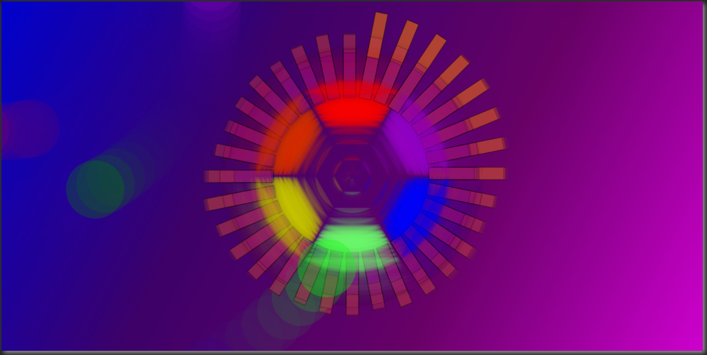
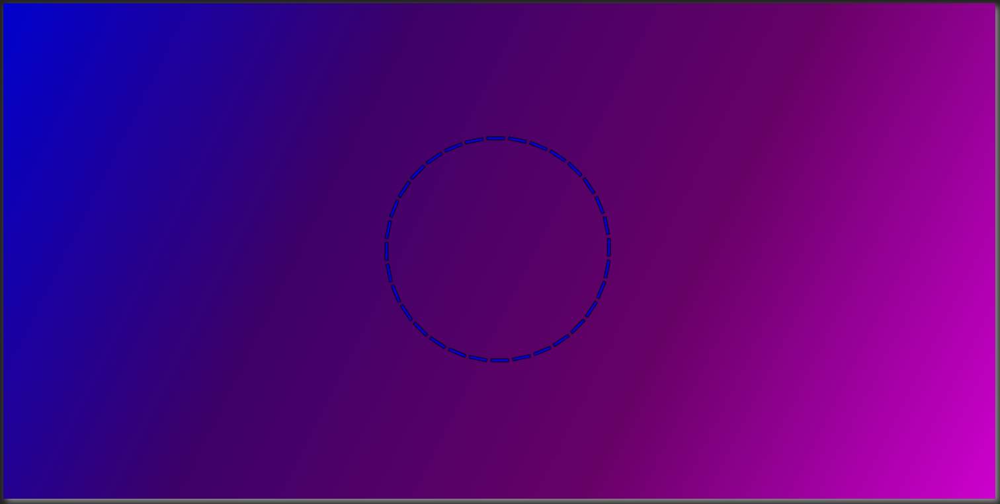
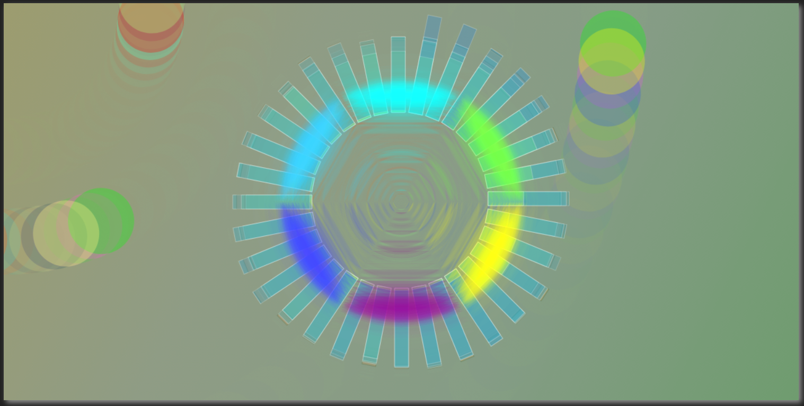
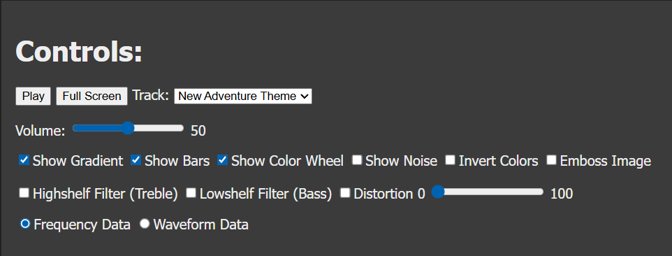

The Audio Visualizer was a project for a web and Javascript Development course.
The project uses HTML, Javascript, the WebAudio API, and Canvas 2D.
The program takes sound data to animate effects on the screen.
The main effect are bars with varying heights based on frequency,
a central multi-colored ring that pulses with the frequency,
and circles that spin faster at louder volumes.
Other screen effects include noise, inverted colors, an emoboss effect, and a gradient background.
Audio effects include bass, treble and sliding distortion filter.
The included sounds are fair use and were provided by the professor.

The Visualizer in its default state.

The Visualizer playing with inverted colors.

The controls for the Visualizer.